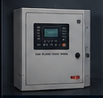
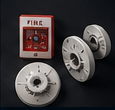
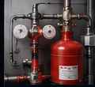

A five-stage workflow converts fire-safety equipment records into inspections, alerts, analytics and accountable action.
Capture coach, OEM and component information.
Maintain status and availability of the safety system.
Schedule, assign and record inspections digitally.
Turn records into dashboards, trends and reports.
Resolve alerts, claims and pending actions.



The dashboard combines schedules, warranty status, component condition and alert information so teams can quickly prioritise critical actions.
We can walk your team through the full FDSS / FSDS process.